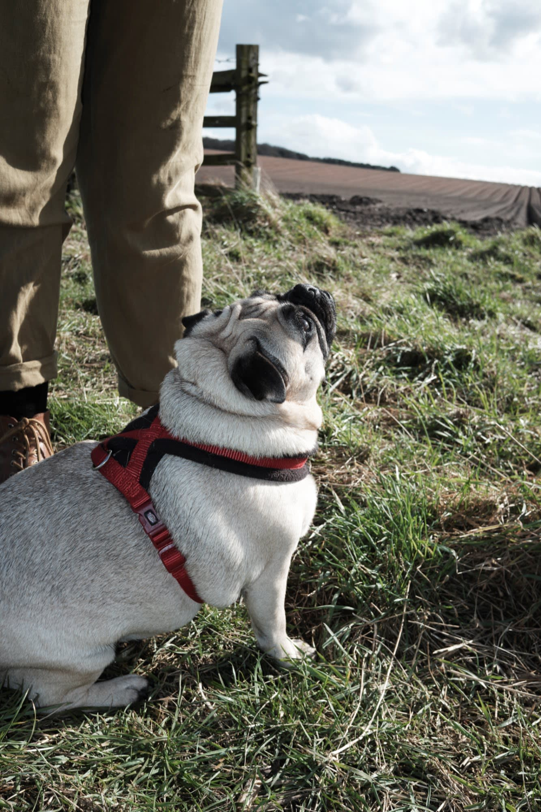
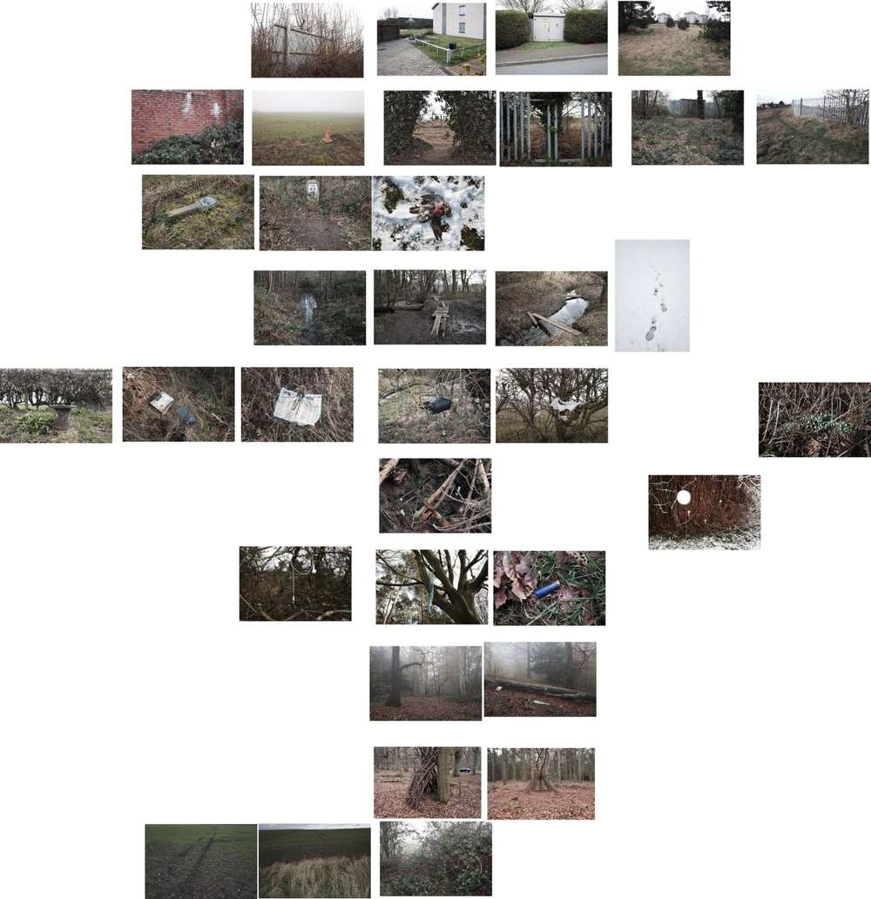

Rich's digital garden
Estovers
Hello Roadside Picnic subscribers. This week’s letter comprises notes from sketchbook curating.
A rare occurrence of the sun
{kind=link}
This week: the weather has made even a leisurely walk to the golf course gruelling. Being inside more than usual, I have reflected on current work- images made through covid walks permitted under the government guideline:
exercise with your household (or support bubble) or one other person, this should be limited to once per day, and you should not travel outside your local area. (gov.uk)
I’m interested in the idea of the allowance to a resource or access outdoors. Prepandemic, an archaic example is the rights of common.A set of antiquated named rights for common land such as Animals ferae naturae -the right to take wild animals, Piscary -the right to fish, Pannage-the right to put pigs out to feed and Pasturage -the right to put livestock out to feed. The last is one is probably the only one I have encountered in person, observed in the peak district where sheep graze heathered commons.
Of the rights of the common, Estoversis the most interesting. It is the right to the wood on a common. This might be whole trees or coppicing for firewood. The word Estoversderives from old french estovoir-to be necessary,and Latin est opus-there is need (collins). The etymology emphases appropriating land as a necessity.
Conceptualizing Estovers, I arranged images, first digitally and then in my sketchbook. Organizing digitally is challenging as it is difficult for a screen to replace physical prints spread out on a table or a wall like Alec Soth in photographers sketchbooks. But it is cheaper and immediate as a starting process. I found a program called PureRef which allows you to throw in images and arrange them at will. It's not perfect, but it is freeing.
I persuaded my inkjet printer to print some of the images I liked. The ones it messed up I kept anyway. For walking in my allotted one per day exercise, I rearranged my sketchbook into a transitional narrative through banal urban, to interstitial liminal spaces, to more recognizably rural spaces. Though not taking wood, I am appropriating these spaces for my mediated view of the camera through a framework of Anthropocene and the death of nature.
{kind=link}
 I don't think the sequence is perfect. It doesn't need to be. With it being in a sketchbook, it can be remixed, ripped, and torn into something else.
I don't think the sequence is perfect. It doesn't need to be. With it being in a sketchbook, it can be remixed, ripped, and torn into something else.
Bookmarks
- Weird walk Zine issue four is out and they put together an interesting edgelands Spotify playlist. I received my copy this weekend, hoping to read it today.
This article is from my newsletter. Consider subscribing, it's free and weekly.
Created
14/03/2021